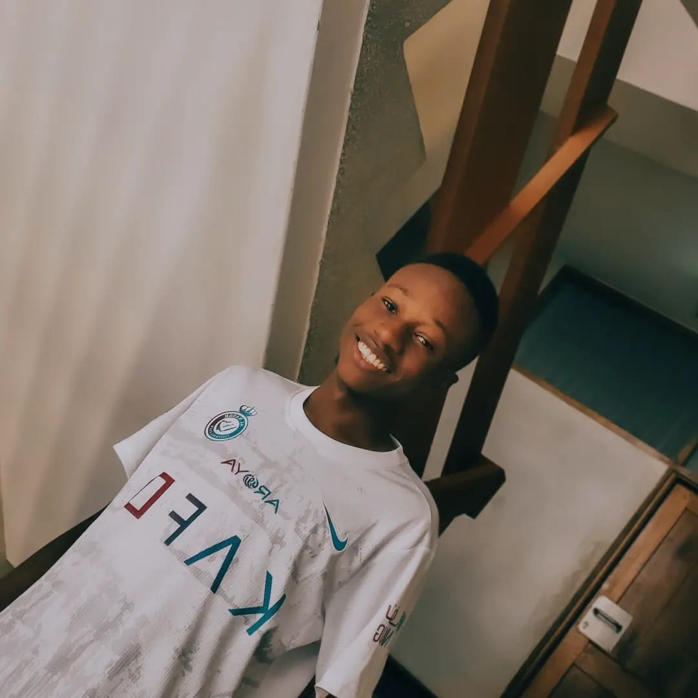
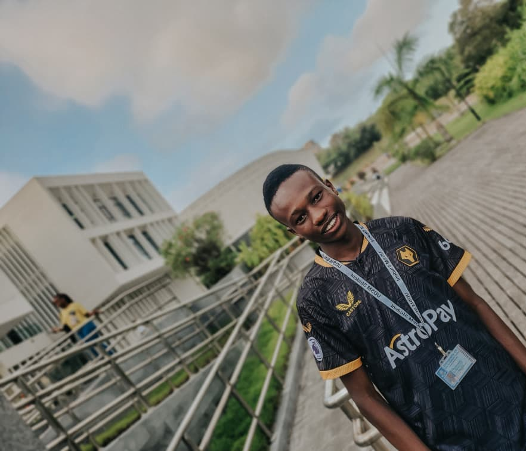

NAVIGATION
Home | Contact | P1 | P2 | P3 | P4 | P5 | P6 | P7 | P8 |PERSONAL INFORMATION
My name is Omary, and I am a first year student at University of Dar es Salaam, where I am studying computer-related courses I have a strong interest in technology, especially web programming, and I enjoy learning how websites are designed and developed In addition to my studies, I am also interested in trading and analyzing financial markets I like improving my skills through practice and learning new strategies. My goal is to become a skilled professional in the field of technology, build useful digital projects, and create opportunities for myself in the future.
I am committed to working hard, gaining knowledge, and continuously improving my abilities.
SKILLS
- Computer Skills
- Programming Languages
- HTML
- Python
- JavaScript
- C++
EDUCATION LEVEL
| Level | School | Year |
|---|---|---|
| Primary school | Brain Trust Primary school | 2016 |
| Ordinary secondary | St Anthony's secondary school | 2020 |
| Advanced Secondary | Benjamin William Mkapa High School | 2023 |
HOBBIES
- Trading - analyzing Financial markets
- Football - playing with friends
MY PICTURES

